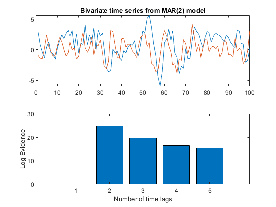

d=2;
p=2;
T=100;
w=[0;0];
A1 = [ 0.4 1.2; 0.3 0.7 ];
A2 = [ 0.35 -0.3; -0.4 -0.5 ];
A = [ A1 A2 ];
C = [ 1.00 0.50; 0.50 1.50 ];
lambda_true=inv(C);
x = spm_mar_gen (w, A, C, T);
logev=[];
for m=1:5,
disp(sprintf('Fitting MAR model with %d components',m));
mar=spm_mar(x,m);
logev=[logev; mar.fm];
end
logev=logev-min(logev);
figure
subplot(2,1,1);
plot(x);
title('Bivariate time series from MAR(2) model');
subplot(2,1,2);
bar(logev);
xlabel('Number of time lags');
ylabel('Log Evidence');
prior=spm_mar_prior(d,p,'global');
[mar,y,y_pred]=spm_mar(x,2,prior);
disp(' ');
disp('Estimates from fitting MAR(2) model');
disp('Lag 1');
disp('True coefficients');
disp(A1);
disp('Estimated coefficients');
disp(-mar.lag(1).a)
disp('Lag 2');
disp('True coefficients');
disp(A2);
disp('Estimated coefficients');
disp(-mar.lag(2).a)
disp('Noise covariance');
disp('True:');
disp(C);
disp('Estimated:');
disp(mar.noise_cov);
Fitting MAR model with 1 components
Fitting MAR model with 2 components
Fitting MAR model with 3 components
Fitting MAR model with 4 components
Fitting MAR model with 5 components
Estimates from fitting MAR(2) model
Lag 1
True coefficients
0.4000 1.2000
0.3000 0.7000
Estimated coefficients
0.3568 0.9686
0.1935 0.4627
Lag 2
True coefficients
0.3500 -0.3000
-0.4000 -0.5000
Estimated coefficients
0.3564 -0.1770
-0.3581 -0.3079
Noise covariance
True:
1.0000 0.5000
0.5000 1.5000
Estimated:
0.9167 0.4873
0.4873 1.4792
